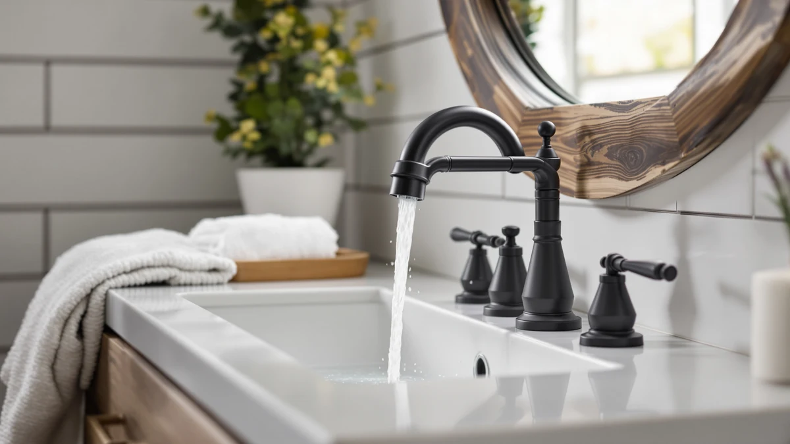

Best Bathroom Faucet for Rental Property (2026)
Prices and picks verified as of August 2026. Independent, reader-supported reviews.


Quick Answer
For most rental properties, the best bathroom faucet for rental property is the Hurran-brand pick at $28.99, because it uses a brass-plus-finish build at the lowest price point that still makes sense to stock across several units. If your sinks are widespread instead of single-hole, the Homevacious waterfall model below is the stronger fit for the same budget.
Our pick: Bathroom Faucets for Sink 3, $28.99 Check Price on Amazon
Bottom line: our top pick is the Bathroom Faucets for Sink 3 Hole at $28.99. The best budget option is the RNDIOZD Matte Black Bathroom Faucets at $25.98.
Things to Know Before You Buy
- Upfront cost multiplies fast. A property with six rental bathrooms turns a $15 price gap between two faucets into a $90 difference across a single turnover, so the per-unit price on this list matters more than it would for a single home purchase.
- Match the existing hole count. A single-hole faucet swaps in without new drilling, while an 8-inch widespread model needs three separate holes already cut into the countertop; picking the wrong configuration turns a fast swap into a countertop replacement.
- Brass underneath the finish resists tenant wear. All seven picks here list a brass-plus-finish construction rather than an all-plastic body, which matters when a faucet has to survive years between inspections rather than months.
- A dark or matte finish hides hard-water spotting longer. Chrome shows mineral buildup and fingerprints faster than a matte black finish, which can buy a landlord extra months before a faucet looks like it needs replacing.
- Generic listings are common at this price point. Several faucets on this list are sold under broad, template-style names rather than a distinct product line; that does not disqualify them, but it means less review history to lean on than an established plumbing brand offers.
The best bathroom faucet for rental property needs to survive rotating tenants, occasional neglect, and years between renovations, all while looking presentable enough to list at a fair rent. Landlords and property managers do not need the most feature-packed faucet on the market; they need one that installs fast, holds up to inconsistent water quality across units, and costs little enough to replace without straining a maintenance budget. That is a different set of priorities than furnishing your own primary bathroom, where a longer warranty or a designer finish might matter more than the upfront price.
We compared seven bathroom faucets across price points, finishes, and hole configurations to build this guide, weighing each one against what a rental unit actually demands: low upfront cost, a straightforward install, and a finish that will not show every water spot between tenant turnovers. At $28.99, the Hurran-brand pick listed simply as Bathroom Faucets for Sink 3 (ASIN B0B2LKJ8C9) is the one we would buy first for a multi-unit property, because it keeps the per-unit cost low enough to stock several at once without stretching a budget. If your rental has an 8-inch widespread sink instead of a single hole, the Homevacious waterfall model and the $39.99 Hurran widespread option are the better fit.
This is a research-based comparison, not a hands-on testing lab. We looked at listed pricing, materials, hole configurations, and what verified buyers report after living with each faucet, then weighed those findings against the specific demands of a rental bathroom rather than a forever home. Several of these listings use generic naming, which is common at this end of the market, so we say plainly where a product's history is limited rather than dressing it up with details the listing does not support.
Why You Should Trust Us
I'm Ilane Tall, and I write about bathroom fixtures with an eye toward buyers who are not furnishing their own primary bathroom: landlords, property managers, and anyone maintaining a rental unit on a budget. Shopping for a rental has different math than shopping for yourself. The faucet that wins here is not necessarily the one with the best features; it is the one that balances low upfront cost against a build that will not need replacing again in two years.
We do not run a physical testing lab, and we are not going to claim we installed each of these faucets across a portfolio of units and tracked them over a lease cycle. Instead, we compared listed pricing, materials, and hole configurations, and we read through verified owner reviews for the patterns that matter to a rental application: installation difficulty, finish durability, and whether a faucet holds up to inconsistent water quality across different buildings. Where a listing has too little review history to say much, we tell you that directly instead of inventing a track record.
How We Picked
Picking the best bathroom faucet for rental property starts with treating price and hole configuration as filters before finish or brand ever enter the conversation. A faucet that costs $75 might be the better product in isolation, but if a property has eight bathrooms to outfit, that price gap compounds into a real budget problem, so we prioritized faucets under $55 that still list a brass-plus-finish build instead of an all-plastic body.
We also screened for hole compatibility, since a rental unit's existing sink rarely gets new holes drilled for a faucet swap. That is why this list includes both single-hole and widespread options: the FORIOUS and Ryuwanku picks fit a standard single hole, while the Homevacious model and one of the Hurran-brand faucets are built for an 8-inch widespread configuration, matching whatever is already cut into the countertop.
Finish mattered too, but differently than it would for a primary residence. We leaned toward matte black and finished options that hide water spotting and fingerprints longer between cleanings, since a rental bathroom typically gets less day-to-day upkeep than an owner-occupied one.
How We Compared
Here is the honest version of our process for narrowing down the best bathroom faucet for rental property. Several of these listings, including all three faucets sold under the Bathroom Faucets for Sink 3 name, are recent listings from smaller brands with limited review history, and we are not going to fabricate hands-on impressions we do not have. Our comparison is criteria-driven: we read the listed pricing, materials, hole configuration, and finish for each faucet, then cross-referenced that against what verified buyers report about installation and long-term performance.
For each pick we weighed price against build quality rather than against a flat notion of value, since a $25.98 faucet with a brass body is doing more for the money than a $25.98 faucet with a plastic one. We also compared the three Hurran-brand listings against each other directly, since they share a brand and a generic product name but land at three different price points and, based on their listings, different configurations. Where verified reviews are thin, we say so instead of guessing at a reputation the product has not earned yet.
Our Picks

Bathroom Faucets for Sink 3
What we like
- Lowest price of the three Hurran-brand faucets on this list, which matters when multiplying across units
- Brass-plus-finish construction rather than an all-plastic body
- The pick we would reach for first when outfitting several bathrooms at once
Flaws but not dealbreakers
- Generic "Bathroom Faucets for Sink 3" naming means limited review history to lean on
- No published hole-count or spout-reach detail beyond what is in the listing
- Sold under the same brand and name as two pricier siblings, which can make browsing confusing
| Material | Brass + finish |
| Size | — |
At $28.99, this Hurran-brand faucet is the least expensive brass-bodied option in this guide, which is the specific quality a landlord furnishing more than one bathroom is shopping for. The generic Bathroom Faucets for Sink 3 title is typical of newer, smaller-brand listings, and it means less brand history to lean on than an established plumbing name offers, but the underlying construction still lists brass plus a finish rather than the all-plastic body that tends to show up at the bottom of this price range.
For a rental property, the calculus here is straightforward: this is the faucet we would buy in bulk. If a single unit needs a distinctive look for a nicer listing, one of the pricier picks below might be worth the upgrade, but for a standard turnover in a multi-unit property, the lowest price that still uses a brass body is usually the right call.

Bathroom Faucets for Sink 3
What we like
- Same Hurran brass-plus-finish construction as our budget pick, at a higher price point
- Suited to a rental unit you are trying to list at a premium
- Distinct enough from the $28.99 sibling to justify stocking one for a nicer bathroom
Flaws but not dealbreakers
- Nearly double the price of the otherwise similar $28.99 Hurran listing
- Shares a generic name with two other Hurran listings, making it easy to confuse online
- Like its siblings, limited independent review history
| Material | Brass + finish |
| Size | — |
This is the most expensive of the three faucets Hurran sells under the Bathroom Faucets for Sink 3 name, priced at $54.49, nearly double the brand's $28.99 entry. Both share the same brass-plus-finish construction listed in their specifications, so the price difference is not about the core material. It comes down to finish and design details that matter more for a unit you are trying to present well than for a basic turnover.
We would reserve this pick for a rental you are actively trying to list at a higher rent, where the bathroom photos matter to prospective tenants, rather than for a standard multi-unit refresh. If price is the only variable that matters for your property, the $28.99 sibling above delivers the same brand and the same base construction for roughly half the cost.

Ryuwanku Bathroom Faucet Matte Black
What we like
- Matte black finish resists visible water spotting between tenant cleanings
- Short profile listed in its specs, useful for a sink deck with limited clearance
- Matches the $28.99 price of our top budget pick
Flaws but not dealbreakers
- The compact height limits clearance for hand washing under a taller sink
- Matte black can show scratches differently than chrome over years of wear
- Single-hole configuration only works if the existing sink is already drilled that way
| Material | Brass + finish |
| Size | Short |
The Ryuwanku faucet lists a short profile and a matte black finish, which sets it apart from the taller waterfall-style options in this guide. That shorter height is listed as a deliberate spec rather than a limitation, and it is worth prioritizing on a rental sink deck where cabinet or mirror clearance is tight, a common issue in older apartment buildings where the vanity was not designed around a modern faucet.
Matte black also does real work in a rental context. It does not show mineral spotting or fingerprints as fast as chrome does, which buys time between the kind of light cleanings a rental bathroom usually gets. At $28.99, it ties our top Hurran pick on price, so the choice between the two mostly comes down to finish preference and whatever clearance your sink deck allows.

FORIOUS Black Bathroom Faucet 3
What we like
- Height documented at 8.58 inches, giving a clear spec to check against your sink deck before buying
- Matte black finish for the same wear-hiding benefit as the Ryuwanku pick
- Brass-plus-finish build consistent with the rest of this list
Flaws but not dealbreakers
- Costs nearly double the cheapest pick in this guide
- Taller height that helps clearance can be a liability on a shallow or pedestal sink
- Brand has less established history than a major plumbing manufacturer
| Material | Brass + finish |
| Size | Faucet Height: 8.58 inches |
FORIOUS publishes a specific height for this faucet, 8.58 inches, which is more documentation than most of the other listings in this guide offer. For a landlord buying sight unseen for a unit you cannot measure in person, that published number is worth something: it lets you check clearance against your sink deck and cabinet before the faucet arrives instead of guessing from photos.
At $49.99, it sits closer to the top of this list on price, but the documented height and matte black finish make it a reasonable pick for a taller sink or a rental where you want the spout to clear a deeper basin. If your unit has a shallow or pedestal-style sink, the shorter Ryuwanku pick above is the safer choice at a similar price tier.

Homevacious Matte Black Waterfall Bathroom
What we like
- Fits the 8-inch, three-hole widespread configuration common in older rental bathrooms
- Waterfall spout style, distinct from the single-hole options elsewhere on this list
- Matte black finish for the same spotting-resistance benefit as our other black picks
Flaws but not dealbreakers
- Only works if your sink already has the three-hole widespread cutout
- Waterfall spouts spread water across a wider opening, which can feel less forceful on a weak supply line
- Mid-pack price for a configuration with fewer competing options in this guide
| Material | Brass + finish |
| Size | 8 Inch Widespread |
The Homevacious faucet is built for an 8-inch widespread sink, the three-hole configuration you will run into most often in older rental buildings that predate the single-hole faucet trend. It is the only widespread pick in this guide with a waterfall-style spout, so if your unit's countertop already has that three-hole cutout, this is one of the few options here that will drop in without new drilling.
At $41.79, it lands in the middle of this list on price, which is reasonable given how few competing widespread options are included here. The tradeoff with any waterfall spout is that it pours water across a wider opening than a standard aerator, so on a building with weak supply pressure it can feel thinner than a concentrated-stream faucet would, a factor worth weighing if your property has known pressure issues.

Bathroom Faucets for Sink 3
What we like
- Fits an 8-inch hole spacing, unlike the two single-hole Hurran siblings
- Mid-range price among the three Hurran listings in this guide
- Brass-plus-finish build consistent with the rest of the brand's lineup
Flaws but not dealbreakers
- Third listing sharing the generic "Bathroom Faucets for Sink 3" name, easy to mix up while shopping
- Costs more than the cheapest single-hole Hurran pick
- Like its siblings, limited independent review history to draw on
| Material | Brass + finish |
| Size | 8 Inch |
This is the third Hurran-brand faucet in this guide, and the one built for an 8-inch hole spacing rather than a single-hole deck. At $39.99, it lands between the brand's $28.99 entry and its $54.49 sibling, which makes it a reasonable middle option if you want to standardize on one brand across a property that has a mix of single-hole and widespread sinks.
The tradeoff of all three Hurran listings sharing the same generic name is that it takes a careful look at the ASIN and hole spacing to know which one you are actually ordering. For a widespread sink specifically, this is the Hurran pick to reach for; the other two are built for a single-hole configuration and will not fit a three-hole countertop.

RNDIOZD Matte Black Bathroom Faucets
What we like
- Lowest listed price in this entire guide at $25.98
- Matte black finish for the same durability benefit as the other black-finish picks
- Brass-plus-finish build rather than an all-plastic body, even at this price
Flaws but not dealbreakers
- Least expensive pick, which typically means the thinnest documentation and review history
- No published height or hole-spacing detail beyond the base listing
- Close enough in price to the top Hurran pick that the difference may not matter for a small property
| Material | Brass + finish |
| Size | — |
At $25.98, the RNDIOZD faucet is the least expensive pick in this guide, undercutting even the budget Hurran listing by a few dollars. For a property with a large number of bathrooms to refresh at once, that gap adds up, and the listing still specifies a brass-plus-finish build rather than dropping to an all-plastic body to hit that price.
The tradeoff at this price point is documentation. RNDIOZD's listing does not publish the height or hole-spacing detail that FORIOUS or Homevacious include, so you are relying more on the photos and finish description than on a verified spec sheet. For a small property where a few dollars per unit will not move the budget, the better-documented Hurran or Ryuwanku picks above may be worth the small premium.
Quick Comparison
This side-by-side view lines up all seven picks by material, price, and best-fit sink configuration, so you can scan for the right match across a rental property in one pass.
| Product | Material | Price | Rating | Best for | Get it |
|---|---|---|---|---|---|
| Bathroom Faucets for Sink 3 | Brass + finish | $28.99 | 4 | Lowest per-unit cost for multi-unit stocking | View on Amazon → |
| Bathroom Faucets for Sink 3 | Brass + finish | $54.49 | 4 | Nicer finish for a flagship listing | View on Amazon → |
| Ryuwanku Bathroom Faucet Matte Black | Brass + finish | $28.99 | 4 | Compact single-hole sinks | View on Amazon → |
| FORIOUS Black Bathroom Faucet 3 | Brass + finish | $49.99 | 4 | Taller sinks needing 8.58 in. height | View on Amazon → |
| Homevacious Matte Black Waterfall Bathroom | Brass + finish | $41.79 | 4 | 8-inch widespread sinks | View on Amazon → |
| Bathroom Faucets for Sink 3 | Brass + finish | $39.99 | 4 | Widespread sinks, same-brand consistency | View on Amazon → |
| RNDIOZD Matte Black Bathroom Faucets | Brass + finish | $25.98 | 4 | Absolute lowest price | View on Amazon → |
What is the best bathroom faucet for rental property on a tight budget?
For the tightest per-unit budget, the RNDIOZD pick at $25.98 is the least expensive option in this guide, though the $28.99 Hurran pick offers slightly more documentation for close to the same price.
Should I choose a single-hole or widespread faucet for a rental bathroom?
Match the faucet to the holes already cut into your existing sink deck rather than picking a style you like and hoping it fits.
The Competition
We passed over a large group of premium widespread and touchless faucets priced well above $75, the kind of fixture better suited to an owner-occupied primary bathroom than a rental unit. Sensor activation and multi-year warranties are nice, but they add failure points and higher replacement costs that do not pencil out across a portfolio of rental bathrooms with unpredictable use.
We also set aside all-plastic-bodied faucets that shave a few dollars off the price of our cheapest pick here. A plastic body can crack or wear out faster under the inconsistent maintenance a rental unit typically gets, and the savings over a brass-plus-finish faucet like the RNDIOZD pick above are small enough that they are not worth the tradeoff in a property you plan to hold for years. Our buying guide covers cartridge and body materials in more depth if you want the full breakdown of what separates a durable faucet from a disposable one.
Finally, we left out faucets marketed heavily on finish variety rather than construction, the kind of listing with a dozen color options and little detail about what is underneath. A rental property's faucet finish matters less than its ability to survive years between inspections, so we prioritized listings like the ones above that specify brass construction over ones that lead with a color chart.
Weighing all of that, the best bathroom faucet for rental property is still the budget Hurran pick at $28.99, because it keeps per-unit cost low without dropping to a plastic body. If your sinks are widespread instead of single-hole, the Homevacious waterfall model or the $39.99 Hurran widespread option are the better fit for the same property-wide budget.